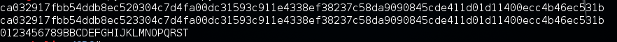

最近在XDCTF遇到一道Bit-flipping Attack的Crypto，刚好在drops上看到了相关的文章，于是纪录一下笔记。
首先我们需要了解CBC是如何工作的。

大致的流程如下：
- 首先将明文分组(常见的以16字节为一组)，位数不足的使用特殊字符填充。
- 生成一个随机的初始化向量(IV)和一个密钥。
- 将IV和第一组明文异或。
- 用密钥对3中xor后产生的密文加密。
- 用4中产生的密文对第二组明文进行xor操作。
- 用密钥对5中产生的密文加密。
- 重复4-7，到最后一组明文。
- 将IV和加密后的密文拼接在一起，得到最终的密文。
drops文章中的公式可以很简洁表达加密过程：
- Ciphertext-0 = Encrypt(Plaintext XOR IV)—只用于第一个组块
- Ciphertext-N = Encrypt(Plaintext XOR Ciphertext-N-1)—用于第二及剩下的组块
解密流程也很容易得到：

- 从密文中提取出IV，然后将密文分组。
- 使用密钥对第一组的密文解密，然后和IV进行xor得到明文。
- 使用密钥对第二组密文解密，然后和2中的密文xor得到明文。
- 重复2-3，直到最后一组密文。
解密的公式如下：
- Plaintext-0 = Decrypt(Ciphertext) XOR IV—只用于第一个组块
- Plaintext-N = Decrypt(Ciphertext) XOR Ciphertext-N-1—用于第二及剩下的组块
这里可以注意到Ciphertext-N-1用来产生下一块明文，如果我们改变Ciphertext-N-1中的一个字节，然后和下一块解密后的密文xor，就可以得到一个不同的明文，而这个明文是我们可以控制的。利用这一点，我们就欺骗服务端或者绕过过滤器。
下图展示了整个攻击过程：
关于CBC的更多细节可以参考 Block_cipher_mode_of_operation
example
根据解密流程，我们假设A = Decrypt(Ciphertext)与B = Ciphertext-N-1异或得到C(明文)。那么
C = A xor B
那么
A xor B xor C = 0
而我们知道任何数异或0都等于它本身，所以我们可以利用
A xor B xor C xor ‘B’
得到’B’字符。
举个简单的例子，首先生成明文，密钥(key)和IV。1
2
3SECRET_KEY = os.urandom(8).encode('hex').upper()
IV = Random.new().read(16)
plaintext = '0123456789ABCDEFGHIJKLMNOPQRST'
然后我们使用AES来对明文加密，AES-128的区块大小为128位也就是16个字符。1
2
3
4
5
6
7
8aes = AES.new(SECRET_KEY, AES.MODE_CBC, IV)
length = 16
count = len(plaintext)
add = length - (count % length)
plaintext = plaintext + ('\0' * add)
ciphertext = IV + aes.encrypt(plaintext)
print b2a_hex(ciphertext)
这里我们希望把第10位的’A’改成’B’，根据前面的到的公式，我们可以修改密文的第10个字节：1
2
3
4
5ciphertext = list(ciphertext)
ciphertext[10] = chr(ord(ciphertext[10]) ^ ord(plaintext[10]) ^ ord('B'))
ciphertext = ''.join(ciphertext)
print b2a_hex(ciphertext)
然后我们解密密文，得到修改的明文。1
2
3
4
5
6IV = ciphertext[:16]
ciphertext = ciphertext[16:]
aes = AES.new(SECRET_KEY, AES.MODE_CBC, IV)
plaintext = aes.decrypt(ciphertext)
print plaintext
运行效果：

Crypto
最后我们来看下在XDCTF中出现的关于CBC字节反转攻击的应用。这道题给了服务端的脚本：1
2
3
4
5
6
7
8
9
10
11
12
13
14
15
16
17
18
19
20
21
22
23
24
25
26
27
28
29
30
31
32
33
34
35
36
37
38
39
40
41
42
43
44
45
46
47
48
49
50
51
52
53
54
55
56
57
58
59
60
61
62
63
64
65
66
67
68
69
70
71
72
73
74
75
76
77
78
79
80
81
82
83
84
85
86
87
88
89
90
91
92
93
94
95
96
97
98
99
100
101
102
103
104
105
106
107
108
109
110
111
112
113
114
115
116
117
118
119
120
121
122
123
124
125
126
127
128
129
130
131
132
133from twisted.internet import reactor, protocol
from Crypto.Cipher import AES
import os
import random
from secret import KEY,KEYSIZE,IV,FLAG
PORT = 6666
def pad(instr, length):
if(length == None):
print "Supply a length to pad to"
elif(len(instr) % length == 0):
print "No Padding Needed"
return instr
else:
return instr + '\x04' * (length - (len(instr) % length ))
def encrypt_block(key, plaintext):
encobj = AES.new(key, AES.MODE_ECB)
return encobj.encrypt(plaintext).encode('hex')
def decrypt_block(key, ctxt):
decobj = AES.new(key, AES.MODE_ECB)
return decobj.decrypt(ctxt).encode('hex')
def xor_block(first,second):
if(len(first) != len(second)):
print "Blocks need to be the same length!"
return -1
first = list(first)
second = list(second)
for i in range(0,len(first)):
first[i] = chr(ord(first[i]) ^ ord(second[i]))
return ''.join(first)
def encrypt_cbc(key,IV, plaintext):
if(len(plaintext) % len(key) != 0): #加密文本的长度必须能整除Key,否则在后面加x40
plaintext = pad(plaintext,len(key))
blocks = [plaintext[x:x+len(key)] for x in range(0,len(plaintext),len(key))]
for i in range(0,len(blocks)):
if (i == 0):
ctxt = xor_block(blocks[i],IV)
ctxt = encrypt_block(key,ctxt)
else:
tmp = xor_block(blocks[i],ctxt[-1 * (len(key) * 2):].decode('hex'))
ctxt = ctxt + encrypt_block(key,tmp)
return ctxt
def decrypt_cbc(key,IV,ctxt):
ctxt = ctxt.decode('hex')
if(len(ctxt) % len(key) != 0):
print "Invalid Key."
return -1
blocks = [ctxt[x:x+len(key)] for x in range(0,len(ctxt),len(key))]
for i in range(0,len(blocks)):
#print blocks[0].encode('hex')
if (i == 0):
ptxt = decrypt_block(key,blocks[i])
ptxt = xor_block(ptxt.decode('hex'),IV)
#print ptxt.encode('hex')
else:
tmp = decrypt_block(key,blocks[i])
tmp = xor_block(tmp.decode('hex'),blocks[i-1])
ptxt = ptxt + tmp
return ptxt
def mkprofile(email):
if((";" in email)):
return -1
prefix = "comment1=wowsuch%20CBC;userdata="
suffix = ";coment2=%20suchsafe%20very%20encryptwowww"
ptxt = prefix + email + suffix #连接字符串
print ptxt
return encrypt_cbc(KEY,IV,ptxt)
def parse_profile(data):
print "DATA:"
print data
ptxt = decrypt_cbc(KEY,IV,data.encode('hex'))
ptxt = ptxt.replace("\x04","")
print ptxt
if ";admin=true" in ptxt:
return 1
return 0
class MyServer(protocol.Protocol):
def dataReceived(self,data):
if(len(data) > 512):
self.transport.write("Data too long.\n")
self.transport.loseConnection()
return
if(data.startswith("mkprof:")):
data = data[7:]
resp = mkprofile(data)
if (resp == -1):
self.transport.write("No Cheating!\n")
else:
self.transport.write(resp + '\n')
elif(data.startswith("parse:")):
self.transport.write("Parsing Profile...")
data = data[6:].decode('hex')
if (len(data) % KEYSIZE != 0):
self.transport.write("Invalid Ciphertext <length>\n")
self.transport.loseConnection()
return
if(parse_profile(data) == 1):
self.transport.write("Congratulations!\nThe FLAG is: ")
self.transport.write(FLAG)
self.transport.loseConnection()
else:
self.transport.write("You are a normal user.\n")
else:
self.transport.write("Syntax Error")
self.transport.loseConnection()
class MyServerFactory(protocol.Factory):
protocol = MyServer
factory = MyServerFactory()
reactor.listenTCP(PORT, factory)
reactor.run()
分析一下代码可以知道，我们的目的是让在最终解密出的明文中有”;admin=true”，根据上面的原理，可以写出脚本(来自writeup)。1
2
3
4
5
6
7
8
9
10
11
12
13
14
15
16from pwn import *
sh = remote('133.130.52.128',6666)
target = ";admin=true"
email = '0000000000000000000000'
prefix = "comment1=wowsuch%20CBC;userdata="
suffix = ";coment2=%20suchsafe%20very%20encryptwowww"
ptxt = prefix + email + suffix
sh.send('mkprof:' + email)
s = sh.recv(1024)[0:len(ptxt)*2]
s = list(s.decode('hex'))
for i in range(len(target)):
s[32+i] = p8( u8(s[32+i]) ^ u8(target[i]) ^ u8(ptxt[48+i]) )
s = ''.join(s).encode('hex')
sh.send('parse:' + s)
print sh.recv(1024)